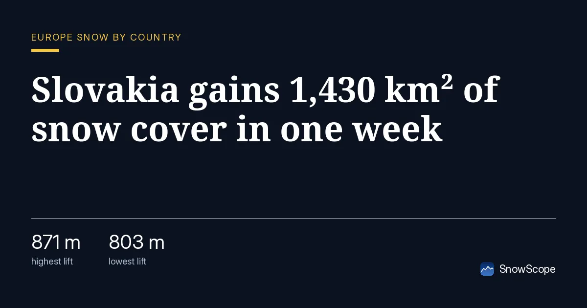

Slovakia gains 1,430 km² of snow cover in one week
In just seven days, Slovakia has recovered nearly 1,430 km² of white ground—a substantial jump from last week's sparse early-season cover.
See the live snow forecast for Ski centrum Dedinky in the SnowScope appSnow depth, powder alerts and the 3D map, free.
A week of recovery
One week ago, only 590 km² of Slovakia carried measurable snow. Today, that figure has climbed to 2,020 km². The shift marks a turning point in a season that began tentatively. Early November brought scattered patches at high altitude; by mid-November, the picture has deepened.
What changed? Altitude made the difference. Ground above 1,500 m now carries a continuous white mantle—98 percent coverage at 1,500–2,000 m, climbing to 100 percent above 2,000 m. The mean depth at those heights (7 cm and 13 cm respectively) reflects steady accumulation rather than spectacular storms. Below 1,500 m, the picture remains patchy: only 40 percent of terrain between 1,000 and 1,500 m holds snow, and lower slopes remain largely bare.
| Resort | Snow depth | New snow, 72 h | Coming, next days | Top |
|---|---|---|---|---|
| Ski centrum Dedinky | 48 cm | 1 cm | 0 cm | 871 m |
| Ski Grúniky | 40 cm | 0 cm | 1 cm | 973 m |
| Vernár | 34 cm | 1 cm | 0 cm | 1,001 m |
| Kubínská hola | 33 cm | 0 cm | 3 cm | 1,390 m |
| Ski Zábava Hruštín | 33 cm | 0 cm | 3 cm | 1,141 m |

Yesterday's retreat and what it means
Between yesterday and today, Slovakia lost 1,070 km² of measured snow cover. This pullback occurred as lighter snow at mid-altitude thawed or consolidated. The snow-covered area dipped from 3,090 km² to 2,020 km². Do not mistake this daily fluctuation for a trend reversal: the week-long trajectory remains upward, and the snow at higher elevations—where skiing happens—has held firm.
Early-season snow is thin and reactive to small temperature shifts. A mild spell can erase scattered patches; a cold night restores them. The retreat yesterday was regional and largely confined to the lower slopes. The High Tatras, our most reliable starting zone, remains the exception: 3 cm of fresh snow in the past 72 hours has reinforced the cover above 1,500 m.
Where the snow sits now
Ski centrum Dedinky, at 871 m, holds 48 cm and leads Slovakia's resort standings. This outsized depth reflects local conditions and modest recent fall rather than representative average snow. At that elevation, snow is fragile; rocks may protrude beneath thin cover. The next three days should bring little new snow there.
Higher resorts tell a different story. Kubínská hola and Ski Zábava Hruštín, both above 1,100 m, hold 33 cm each and stand to gain 3 cm over the next three days. The snow-line elevation now sits at 1,200 m, meaning terrain above that threshold builds and persists while lower slopes remain compromised. Vernár, Ski Grúniky, and intermediate sites hold between 34 and 40 cm—modest by mid-winter standards but respectable for mid-November.
The band structure: a staircase of depth
Slovakia's snow is vertically sorted. Between 500 and 1,000 m, only 5 percent of the mapped area carries snow; mean depth is zero. Jump to 1,000–1,500 m and coverage rises to 40 percent with 1 cm average depth. The real shift occurs above 1,500 m: 98 percent of terrain at 1,500–2,000 m holds 7 cm, and the band above 2,000 m is fully white at 13 cm mean depth.
This staircase reflects the physics of early season: cold air settles over high ground; lower terrain oscillates above and below the freezing threshold. For skiers, the message is clear: seek elevation. High-altitude runs offer continuous snow; mid-mountain terrain is nascent; low slopes remain a lottery of bare patches and thin cover.
The forecast: a critical four days ahead
Tomorrow, 17 November, marks the snowiest day of the next week. The forecast shows 4 cm across the mapped area. This is the first named snow-day in the season and will be concentrated above 1,000 m. The following three days will see marginal gains, with roughly 8 cm cumulative by 19 November.
Looking ahead, the second week of this forecast window (24–30 November) shows substantially higher activity: 31 cm forecast for the peak days. That outlook suggests the transitional phase is ending and the season is building towards more substantial cover. For now, the present week remains a consolidation period—not a dump, but a steady rise in elevation-dependent depth.
Context: the regional picture
Poland's Tatras neighbour holds similar early-season conditions with 11 percent white cover and a lead of 45 cm at Orlskie Záhoří; 15 cm is forecast for the next week. Czechia lags well behind at 3 percent coverage and 8 cm expected over seven days. Slovakia sits in the middle of the regional spectrum—not leading, but consolidating faster than the lower-altitude Czech terrain and matching Poland's pace in the mountains.
Of Slovakia's 107 mapped resorts, only 42 currently carry snow. This sparse distribution underscores how selective and elevation-dependent the snow season remains. The white share of 11 percent, though low by February standards, represents a significant overnight jump and a valid foundation for high-altitude skiing above 1,500 m.
Tips for skiers
- Target terrain above 1,500 m where snow depth reaches 7–13 cm and coverage is continuous. Lower slopes remain patchy despite reported depths at individual resorts.
- Expect 4 cm tomorrow (17 November), concentrated above 1,000 m. Conditions will gradually improve, but early-season snow remains thin; scout runs for rocks or bare patches beneath the surface.
- Watch the forecast closely: a warm spell could thin mid-altitude cover, but high-elevation snow is now locked in and stable above 1,500 m.
- If skiing below 1,200 m (the current snow line), verify local conditions and expect variable coverage. Higher resorts like Kubínská hola offer more consistent terrain.
- Before venturing off-piste, consult the official avalanche forecast for Slovakia. Early-season snow bonds unevenly, and thin cover over frozen ground can hide hazards.
About these numbers
Resort snow depths are the deepest snow on the resort's upper slopes on the date shown; they are estimates for an area, not a measurement at one point. Forecasts can change. Always read the official avalanche bulletin before going off-piste.
Cite this report
For research, teaching or the press: the numbers and charts are free to reuse under CC BY 4.0 with this citation.
SnowScope (2026), Slovakia gains 1,430 km² of snow cover in one week, https://snowscope.app/blog/en/2026/11/slovakia-snow-report-16-november-2026.html, accessed 2026-11-16
SnowScope (Atlas Labs). (2026, November 16). Slovakia gains 1,430 km² of snow cover in one week. SnowScope snow reports. https://snowscope.app/blog/en/2026/11/slovakia-snow-report-16-november-2026.html
BibTeX
@misc{snowscope2026slovakiasnowreport16nove,
author = {{SnowScope (Atlas Labs)}},
title = {Slovakia gains 1,430 km² of snow cover in one week},
year = {2026},
month = nov,
howpublished = {\url{https://snowscope.app/blog/en/2026/11/slovakia-snow-report-16-november-2026.html}},
note = {Published 2026-11-16 20:42 UTC; accessed 2026-11-16}
}· CC BY 4.0 · Methods, data and tools →
Ski centrum Dedinky: snow and temperature by height, this winter vs last (tools) →
Follow Ski centrum Dedinky
Free: a message when fresh snow is coming, and the forecast every morning.
More snow reports

We compared the snow on 10 November with each winter's deepest snow at 46 ski resorts over 46 winters. A snowy start helps, but less than many skiers think.

Ukraine's snow cover dropped to 6% today as the Carpathians melt back. Poland holds twice the white share. Both countries face fresh snow by Friday.

79% of Sweden's ski areas show snow today. Upper slopes at Björkliden and Abisko carry 131 cm. The Hemavan fjells led the past 72 hours with 15 cm of fresh snow.